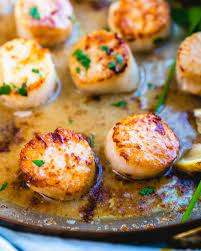
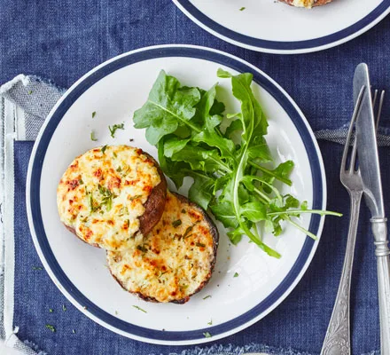
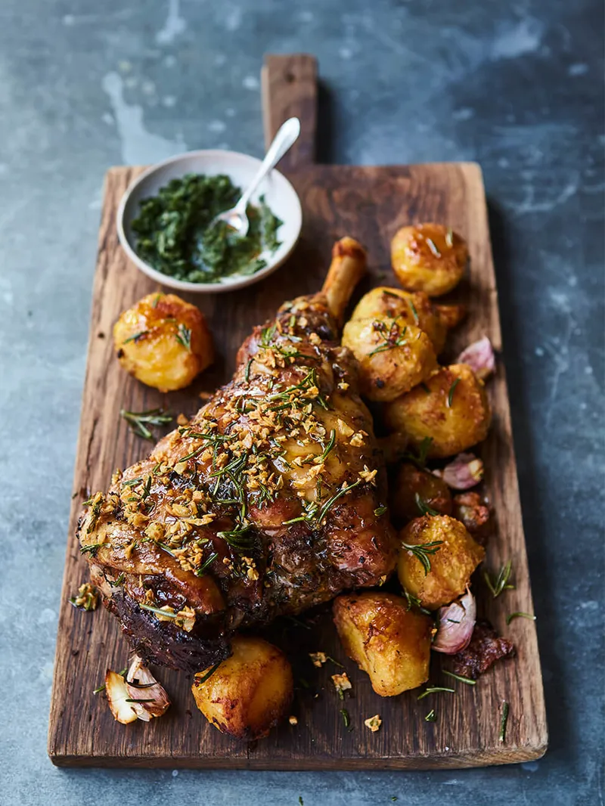

MORE ABOUT FOOD



We all know that cooking is a day to day thing as we can't live without having something in our stomachs.
Well, others prefer ccoking when they feel like or they just order food online.
To some of us, cooking is a passion and we just don't feel right if the food isn't cooked by us.
In this blog, you will discover and learn some of the skills about simple but tasty dishes that will make your family enjoy eating.